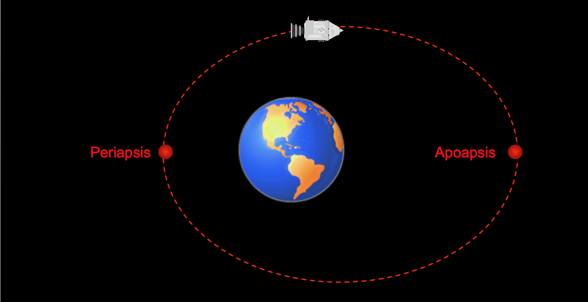

Your trip to the stars
The Saturn V rocket was 363 ft tall. It weighed at least 6,221,000 lbs! It was launched in NASA's
Kennedy Space Center, on one of the launch pads Elon Musk uses to launch rockets like the Falcon Heavy rocket today!
Saturn V burned Kerosene and Hydrogen Fuel at an astounding rate of 20 tonnes of fuel per second!
Some experts beleive that the fuel input was equal to the energy input of the entrire UK at the time!
What monstrous engines could burn this fuel? The F1 engines, the largest engines ever used in Space Flight.
These engines were big enough to comfortably fit a grown man inside.
The ∆v of the Apollo Lunar Module, nicknamed 'The Eagle', was about 2470 m/s.
Not all Space Missions land on the moon, however. Most Space Missions, manned and unmanned, are going into
orbit. There are three types of orbit: Geostationary Orbit, where the Sattelite points at one point on
Earth, Low Earth Orbit, where it circles just above the atmosphere, and Polar Orbit, orbiting around the north and south poles.
There are two points on an orbit that Mission Control is
interested in. The apoapsis, the highest point in the orbit,
and the periapsis, the lowest point in the orbit. If the orbit
is perfectly circular, they will be the same. How do you change
these orbits? To raise one point, burn prograde (in the direction
of travel) at the other point, and to raise a point, burn retrogade
(away from the direction of travel) at the other point.
git add --all
git commit -m "$1"
git push -u origin master
Run the command with a commit messgae:
./commitAndUpload.sh "added great ideas..."